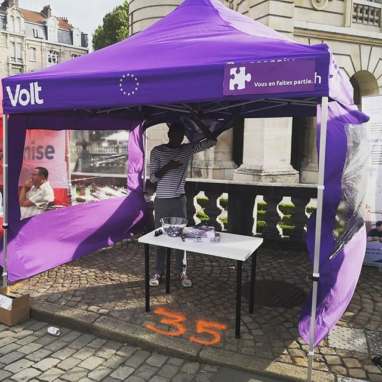
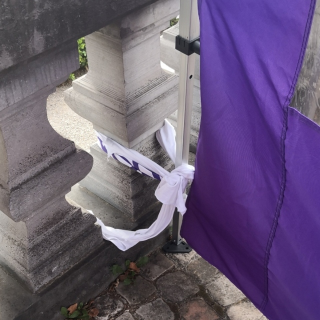

Bonjour à tous et à toutes,
Une semaine avec pas mal de boulot pour préparer notre stand à la Braderie de Lille est passée. C'était très intéressant d'échanger avec les autres équipes, de nous présenter et d'expliquer nos idées au public. Ce n'était pas cool d'état témoin des actes violents entre les autres équipes. La politique devrait être sur les discours et des arguments entre les porteurs des opinions - il n'y a aucun espace pour l'agression. Nous sommes déçus d'avoir vu ses actions à Lille - en plus pendant un week-end, quand nous devrions montrer nos valeurs et nos capacités d'être un e représentant.e.
Bienvenue sur la réalité je crains. Bonne lecture.
Sven
La Braderie est un événement pour les citoyens - pour vendre, pour échanger et pour discuter. Pour voir et être vu. C'est un événement pour tout et tous, sans l'esprit de commerce “professionnel”. Un événement pour aller chercher et trouver des objets précieux. Dans ses axes, notre projet est assez similaire. Nous sommes un mouvement au service des préoccupations des citoyens. Nous voulons échanger et discuter, voir, qui est intéressé par Volt et - bien sûr - été vu. Nous voulons présenter nos idées pour Lille 2020, comme les autres participant à la Braderie.

C'était aussi apparent, que la politique est perçue comme un monde différent - les affiches partagées la seule moyen de se mettre "en contact" avec l'autre monde. De (re-)connecter ces mondes, c'est un peu notre but à Volt si nous voulons changer la façon de faire de la politique. Parce que pour la politique c'est essentiel d'être basée dans les communautés et pour les citoyens, c'est indispensable de s'impliquer. Sinon, avec les moins de "contact", la probabilité de mécontent et d'une perte de motivation ainsi de la participation est renforcée. Donc, au boulot !
Enfin, dans la catégorie "bien appris", nous avons trouvé que nos t-shirts sont bien dans les après-midi pour fixer notre pavillon en face du vent :)
Notre site web pour Volt Lille est en ligne sur www.voltlille.fr - nous sommes en cours à relire et corriger les textes et optimiser les paramètres techniques/seo, mais le premier site d'un "équipe ville" en France est fait - avec les logiciels libres/open source. Si vous avez des propositions pour notre programme où des idées pour améliorer le site, n'hésitez pas à nous laisser un message.
Nous avons aussi lancé notre site sur Twitter (twitter.com/voltlille) et Facebook (www.facebook.com/voltlille) - suivez-nous pour rester au courant !
Les projets suivants à Lille et la MEL ont besoin de vos avis et de vos idées :
Quels événements à Lille sont intéressants à participer ? Voici notre liste :
Des questions, des commentaires : info@voltlille.fr.
Bonne semaine à tous,
Sven